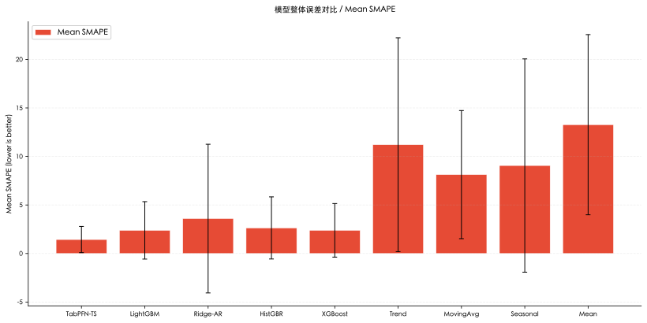
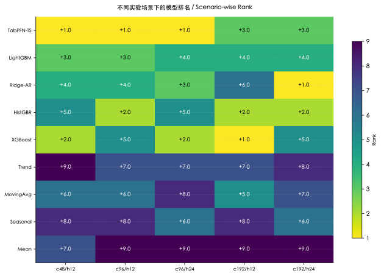
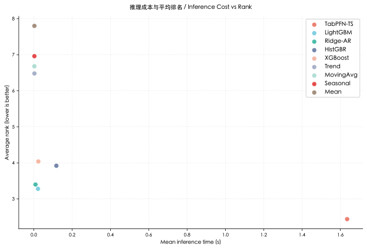
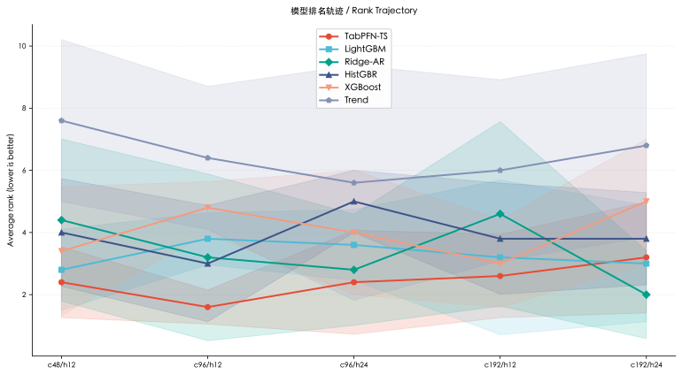
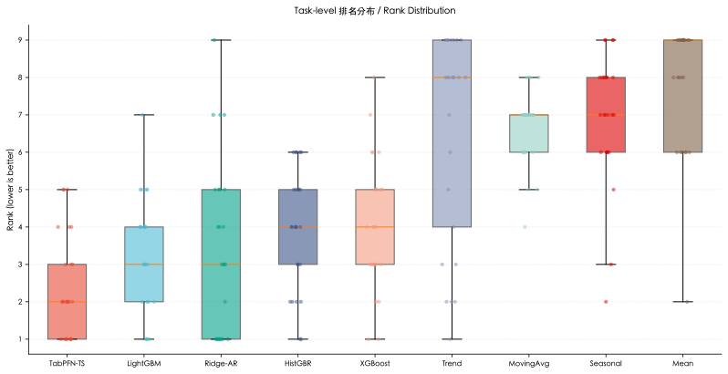
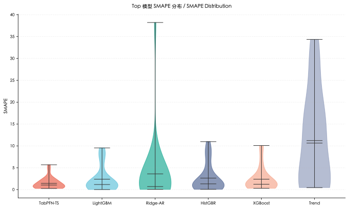
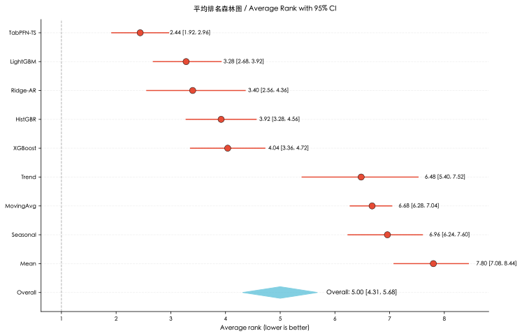

{kind=link}
{kind=link}
带标准差的整体误差对比。

使用 SkillHub academic-figures 生成的出版风格图集。所有图基于 full_benchmark_v1 真实 metrics；输出同时包含 SVG 和 300DPI PNG。
带标准差的整体误差对比。

不同 context/horizon 场景中的模型排名。

推理成本与平均排名的关系。

Top 模型排名随实验场景变化。

每个模型在 25 个 task 上的排名分布。

Top 6 模型 task-level SMAPE 分布。

平均排名及 bootstrap 95% CI。

| Display | Raw model | Avg rank | Mean SMAPE | Wins | Top-3 |
|---|---|---|---|---|---|
| TabPFN-TS | tabpfn_ts | 2.440 | 1.4389 | 7 | 19/25 |
| LightGBM | lightgbm_ar | 3.280 | 2.3852 | 4 | 13/25 |
| Ridge-AR | ridge_ar | 3.400 | 3.5997 | 9 | 14/25 |
| HistGBR | hist_gradient_boosting_ar | 3.920 | 2.6354 | 2 | 9/25 |
| XGBoost | xgboost_ar | 4.040 | 2.3881 | 2 | 11/25 |
| Trend | linear_trend | 6.480 | 11.2109 | 1 | 6/25 |
| MovingAvg | moving_average | 6.680 | 8.1313 | 0 | 0/25 |
| Seasonal | seasonal_naive | 6.960 | 9.0656 | 0 | 2/25 |
| Mean | dummy_mean | 7.800 | 13.2761 | 0 | 1/25 |
{kind=link}
{kind=link}
{kind=link}
{kind=link}
{kind=link}
{kind=link}
{kind=link}
{kind=link}
{kind=link}
{kind=link}
{kind=link}
{kind=link}